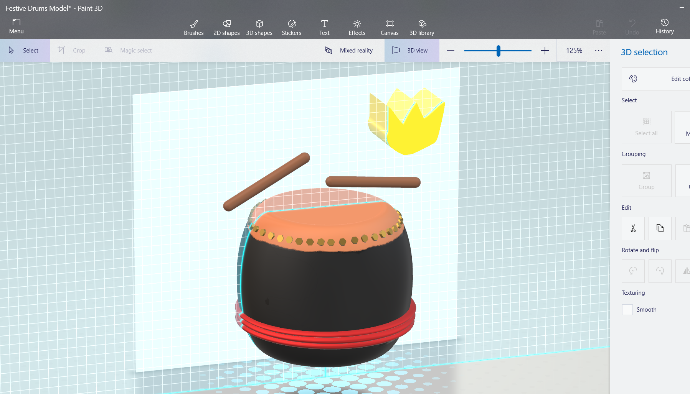

| Name: | Lim Soon Keik | |
| Student ID: | B200040A | |
| Batch: | BoSE20-A1 | |
| Email Address | B200040A@sc.edu.my/ soonkeik123@hotmail.com | |
| BTPR1013 Internet Application | ||
| --Individual Project-- | ||
| Topic: | 24 Festive Drums | |
| Website URL: |
|
http://127.0.0.1:5500/index.html
http://127.0.0.1:5500/page1.html http://127.0.0.1:5500/page2.html http://127.0.0.1:5500/page3.html http://127.0.0.1:5500/page4.html http://127.0.0.1:5500/page5.html |
| Date of submission: | 18 December 2020 | |
| Documentation of image creation: | This image is the original picture that I have taken with my mobile phone. I use Adobe Photoshop to adjust the brightness and the texture due to the website theme is dark color. Besides that, I have croped out a suitable size to use on website. | |
|  | This image shows the middle process of making a GIF file. In order to make a similar drum, I used paint 3D to demonstrate the 3D drum and save the picture with different posses of drumstick. At the end, I use GIF generator to produce a GIF. | |
| Reference of free source Image |
|
|